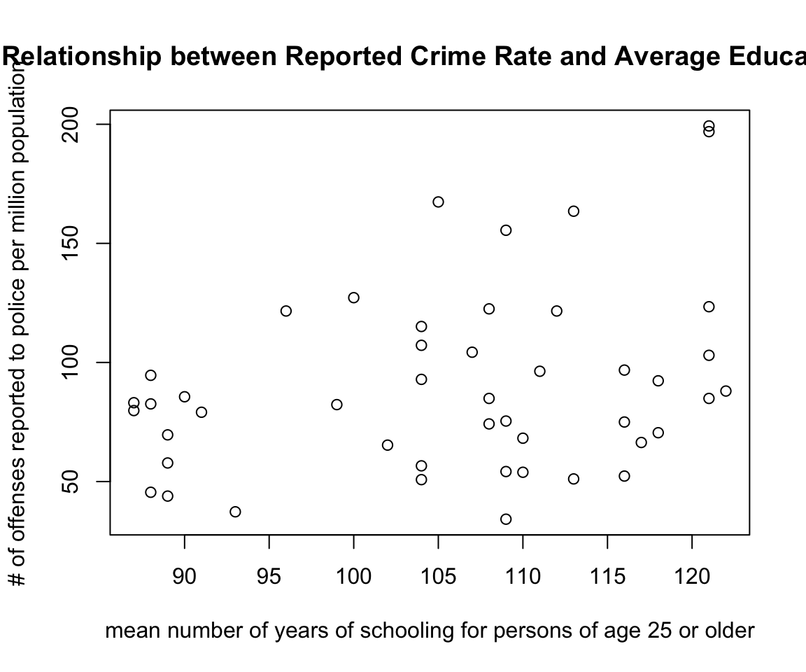
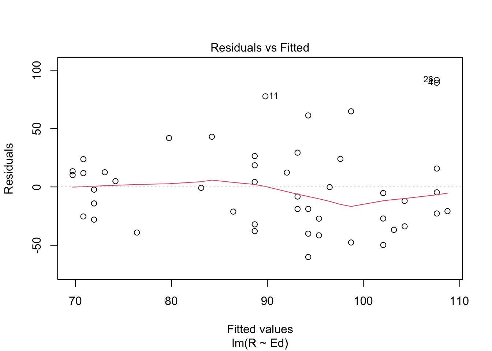
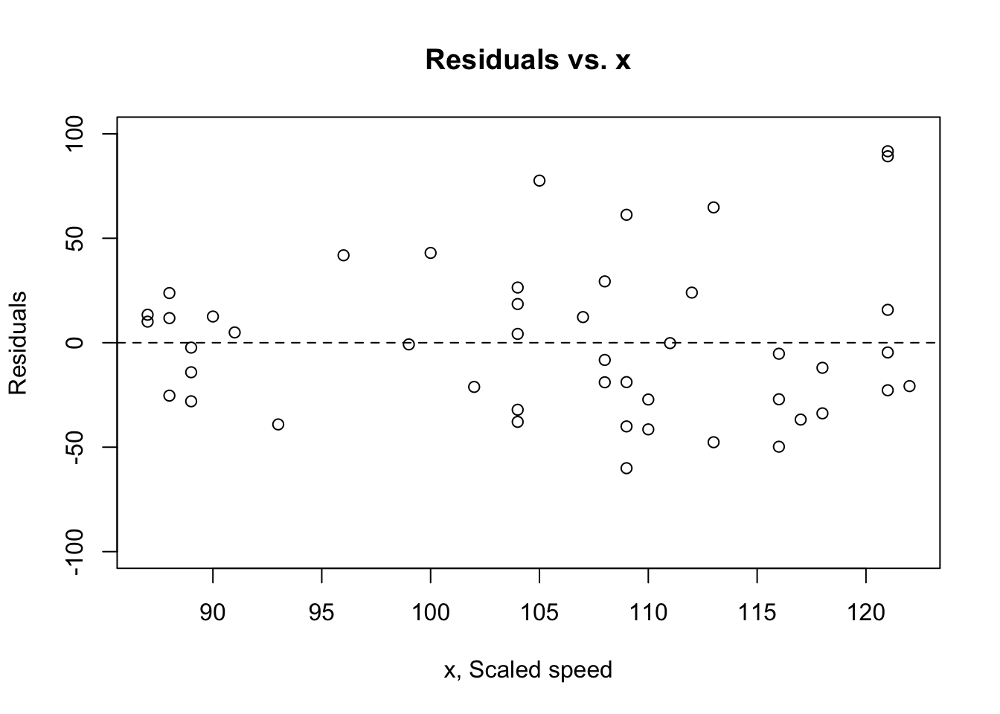
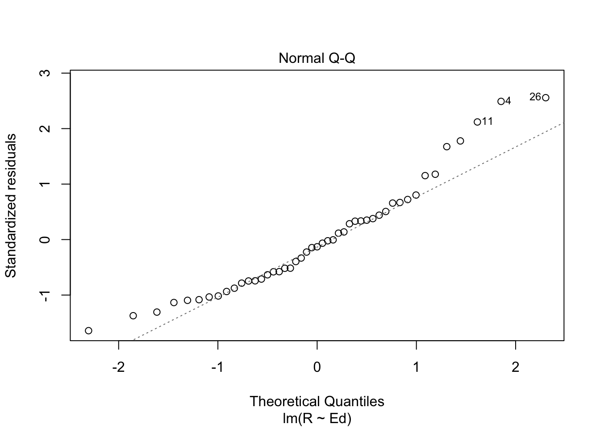

Assignment 3
Tori Borlase
Today’s date here: 10/27/2021
Collaborators: Theodora Athanitis.
This assignment is due on Canvas on Wednesday 10/27/2021 before class, at 10:15 am. Include the name of anyone with whom you collaborated at the top of the assignment.
Submit your responses as either an HTML file or a PDF file on Canvas. Also, please upload it to your website.
Save the file (found on Canvas) crime_simple.txt to the same folder as this file (your Rmd file for Assignment 3).
Load the data.
library(readr)
library(knitr)
dat.crime <- read_delim("crime_simple.txt", delim = "\t")## Rows: 47 Columns: 14## ── Column specification ────────────────────────────────────────────────────────
## Delimiter: "\t"
## dbl (14): R, Age, S, Ed, Ex0, Ex1, LF, M, N, NW, U1, U2, W, X##
## ℹ Use `spec()` to retrieve the full column specification for this data.
## ℹ Specify the column types or set `show_col_types = FALSE` to quiet this message.This is a dataset from a textbook by Brian S. Everitt about crime in the US in 1960. The data originates from the Uniform Crime Report of the FBI and other government sources. The data for 47 states of the USA are given.
Here is the codebook:
R: Crime rate: # of offenses reported to police per million population
Age: The number of males of age 14-24 per 1000 population
S: Indicator variable for Southern states (0 = No, 1 = Yes)
Ed: Mean of years of schooling x 10 for persons of age 25 or older
Ex0: 1960 per capita expenditure on police by state and local government
Ex1: 1959 per capita expenditure on police by state and local government
LF: Labor force participation rate per 1000 civilian urban males age 14-24
M: The number of males per 1000 females
N: State population size in hundred thousands
NW: The number of non-whites per 1000 population
U1: Unemployment rate of urban males per 1000 of age 14-24
U2: Unemployment rate of urban males per 1000 of age 35-39
W: Median value of transferable goods and assets or family income in tens of $
X: The number of families per 1000 earning below 1/2 the median income
We are interested in checking whether the reported crime rate (# of offenses reported to police per million population) and the average education (mean number of years of schooling for persons of age 25 or older) are related.
- How many observations are there in the dataset? To what does each observation correspond?
dim(dat.crime)## [1] 47 14There are 47 observations in the dataset. Each observation corresponds with a state in the US.
- Draw a scatterplot of the two variables. Calculate the correlation between the two variables. Can you come up with an explanation for this relationship?
library(readr)
library(knitr)
plot(dat.crime$Ed, dat.crime$R, main="Relationship between Reported Crime Rate and Average Education",
xlab="mean number of years of schooling for persons of age 25 or older", ylab="# of offenses reported to police per million population")
cor(dat.crime$Ed, dat.crime$R)## [1] 0.3228349The correlation between these two variables is 0.3228349. This makes sense because there seems to be little relationship in the scatter plot between the two variables.
- Regress reported crime rate (y) on average education (x) and call this linear model
crime.lmand write the summary of the regression by using this code, which makes it look a little nicer{r, eval=FALSE} kable(summary(crime.lm)$coef, digits = 2).
# Remember to remove eval=FALSE above!
crime.lm <- lm(formula = R ~ Ed, data = dat.crime)
kable(summary(crime.lm)$coef, digits = 2)| Estimate | Std. Error | t value | Pr(>|t|) | |
|---|---|---|---|---|
| (Intercept) | -27.40 | 51.81 | -0.53 | 0.60 |
| Ed | 1.12 | 0.49 | 2.29 | 0.03 |
- Are the four assumptions of linear regression satisfied? To answer this, draw the relevant plots. (Write a maximum of one sentence per assumption.)
plot(crime.lm, which=1)
Assumption 1: Linearity. This assumption is satisfied because the line representing average value of the residuals at each value of fitted value looks relatively flat .
plot(dat.crime$Ed, crime.lm$residuals, ylim=c(-100,100), main="Residuals vs. x", xlab="x, Scaled speed", ylab="Residuals")
abline(h = 0, lty="dashed")
Assumption 2: Independence. While there is no way to check this is true, based on our plots, this assumption is satisfied because there is no apparent patterns in the residuals plot.
plot(crime.lm, which=3)
Assumption 3: Homoscedasticity. There appears to be no patterns in variability of x and y, and the scale-location plot above appears to have a relatively flat line.
plot(crime.lm, which=2)
Assumption 4: Normal Population. The values in the top right and the shape of the QQ plot show that it may have a light tail, or may be smaller than usual for a normal distribution.
- Is the relationship between reported crime and average education statistically significant? Report the estimated coefficient of the slope, the standard error, and the p-value. What does it mean for the relationship to be statistically significant?
summary(crime.lm)##
## Call:
## lm(formula = R ~ Ed, data = dat.crime)
##
## Residuals:
## Min 1Q Median 3Q Max
## -60.061 -27.125 -4.654 17.133 91.646
##
## Coefficients:
## Estimate Std. Error t value Pr(>|t|)
## (Intercept) -27.3967 51.8104 -0.529 0.5996
## Ed 1.1161 0.4878 2.288 0.0269 *
## ---
## Signif. codes: 0 '***' 0.001 '**' 0.01 '*' 0.05 '.' 0.1 ' ' 1
##
## Residual standard error: 37.01 on 45 degrees of freedom
## Multiple R-squared: 0.1042, Adjusted R-squared: 0.08432
## F-statistic: 5.236 on 1 and 45 DF, p-value: 0.02688The estimated coefficient of slope is 1.1161. The Standard Error is 0.4878. The p-value is 0.0269. However, because of the QQ plot results, this significance result may be too strong compared to reality, so we should be cautious when saying that the relationship is statistically significant even though the p-value is less than .05. A relationship is statistically significant when the result is very unlikely to be due to chance; in this case, having these results is relatively unlikely if there is no correlation between R and Ed.
- How are reported crime and average education related? In other words, for every unit increase in average education, how does reported crime rate change (per million) per state?
For every unit increase in average education, reported crime rate increases by 1.1161 (per million) per state.
- Can you conclude that if individuals were to receive more education, then crime will be reported more often? Why or why not?
No. Just because these variables are correlated does not prove that one of them causes the other to occur. There may be causation in the reverse way, where crime being reported more often causes individuals to recieve more education, or there may be a third variable or condition that is causing both of them to change.